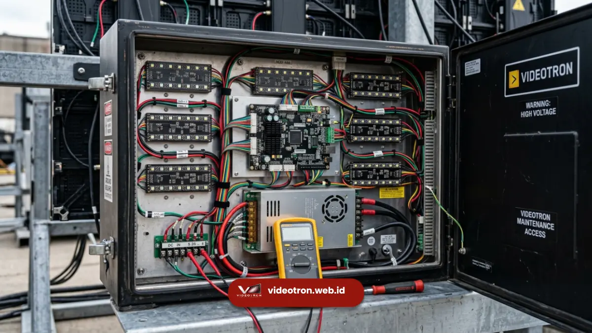

Umur pakai videotron pada umumnya berkisar antara 5 hingga 10 tahun untuk pemakaian normal, tergantung kualitas chip LED, intensitas penggunaan, dan perawatan yang dilakukan secara berkala.
Poin Penting:
- Umur pakai videotron biasanya dihitung berdasarkan estimasi jam operasional chip LED
- Chip LED berkualitas dapat bertahan puluhan ribu jam operasional sebelum kecerahan menurun signifikan
- Kondisi lingkungan outdoor cenderung mempercepat penurunan performa dibanding indoor
- Perawatan rutin dan penggunaan sesuai kapasitas memperpanjang usia pakai
- Garansi vendor menjadi indikator penting kualitas dan daya tahan produk
Berapa Lama Umur Pakai Videotron pada Umumnya?
Umur pakai videotron umumnya diperkirakan 5 hingga 10 tahun dengan penggunaan normal 8-12 jam per hari, meskipun beberapa instalasi berkualitas tinggi dapat bertahan lebih lama dengan perawatan yang konsisten.
Perhitungan umur pakai videotron biasanya didasarkan pada estimasi jam operasional chip LED sebelum kecerahannya menurun hingga separuh dari kondisi awal, yang dikenal sebagai istilah "half brightness lifespan".
Penting dipahami bahwa umur pakai bukan berarti videotron berhenti berfungsi total setelah periode tersebut, melainkan penurunan bertahap pada tingkat kecerahan dan akurasi warna yang mulai terasa oleh mata.
Faktor Apa yang Memengaruhi Umur Pakai Videotron?
Umur pakai videotron dipengaruhi oleh kualitas chip LED, intensitas penggunaan harian, kondisi lingkungan pemasangan, dan kualitas perawatan yang dilakukan secara rutin.
- Kualitas Chip LED: Chip LED dari produsen ternama umumnya memiliki konsistensi produksi lebih baik, sehingga penurunan kecerahan terjadi lebih lambat dan merata dibanding chip dengan kualitas variatif. Videotron yang menggunakan chip berkualitas rendah cenderung menunjukkan gejala dead pixel atau perubahan warna lebih cepat.
- Intensitas dan Durasi Penggunaan: Videotron yang dioperasikan dalam waktu lama setiap hari, terutama pada tingkat kecerahan maksimal, akan mengalami penurunan performa lebih cepat dibanding videotron yang digunakan secara terbatas atau dengan pengaturan brightness yang disesuaikan kebutuhan.
- Kondisi Lingkungan Pemasangan: Videotron outdoor terpapar panas, kelembapan, debu, dan hujan yang dapat mempercepat degradasi komponen elektronik dibanding videotron indoor yang berada di lingkungan lebih terkontrol. Sistem proteksi seperti rating IP (Ingress Protection) pada videotron outdoor berperan penting dalam menjaga daya tahan komponen dari faktor lingkungan tersebut.
- Kualitas Perawatan: Videotron yang mendapat pembersihan rutin, pengecekan sistem pendingin, dan perbaikan modul yang bermasalah sejak dini cenderung memiliki umur pakai lebih panjang dibanding videotron yang jarang dirawat.

Bagaimana Cara Memperpanjang Umur Pakai Videotron?
Cara memperpanjang umur pakai videotron meliputi pengaturan brightness sesuai kebutuhan, pembersihan berkala, dan penanganan cepat terhadap modul yang bermasalah.
Mengatur tingkat kecerahan sesuai kondisi lingkungan, bukan selalu pada level maksimal, membantu mengurangi beban kerja chip LED secara keseluruhan.
Pembersihan debu pada permukaan panel dan sistem ventilasi juga penting agar sirkulasi udara tetap lancar dan mencegah panas berlebih yang dapat mempercepat kerusakan komponen.
Penanganan modul bermasalah sejak dini, seperti mengganti panel dengan dead pixel sebelum meluas, juga membantu menjaga tampilan tetap optimal dan mencegah kerusakan menyebar ke komponen lain.
Selain itu, memastikan sistem kelistrikan dan grounding terpasang sesuai standar turut mengurangi risiko kerusakan akibat lonjakan tegangan.
Kesimpulan serta Rekomendasi
Umur pakai videotron umumnya berkisar 5-10 tahun tergantung kualitas chip LED, intensitas pemakaian, kondisi lingkungan, dan perawatan yang dilakukan.
Memilih videotron dengan spesifikasi chip yang jelas dan menerapkan perawatan rutin adalah langkah utama untuk memastikan investasi videotron memberikan nilai jangka panjang.
Konsultasikan kebutuhan instalasi videotron permanen Anda dengan tim kami untuk mendapatkan rekomendasi spesifikasi yang sesuai dengan durasi penggunaan dan lokasi pemasangan Anda.

Hawa Nadira
LED Technology Consultant dan Visual Educator
Konsultan dan spesialis solusi display digital berdedikasi tinggi yang fokus membagikan panduan edukatif mengenai penerapan teknologi layar LED videotron untuk kebutuhan interior modern di Indonesia.